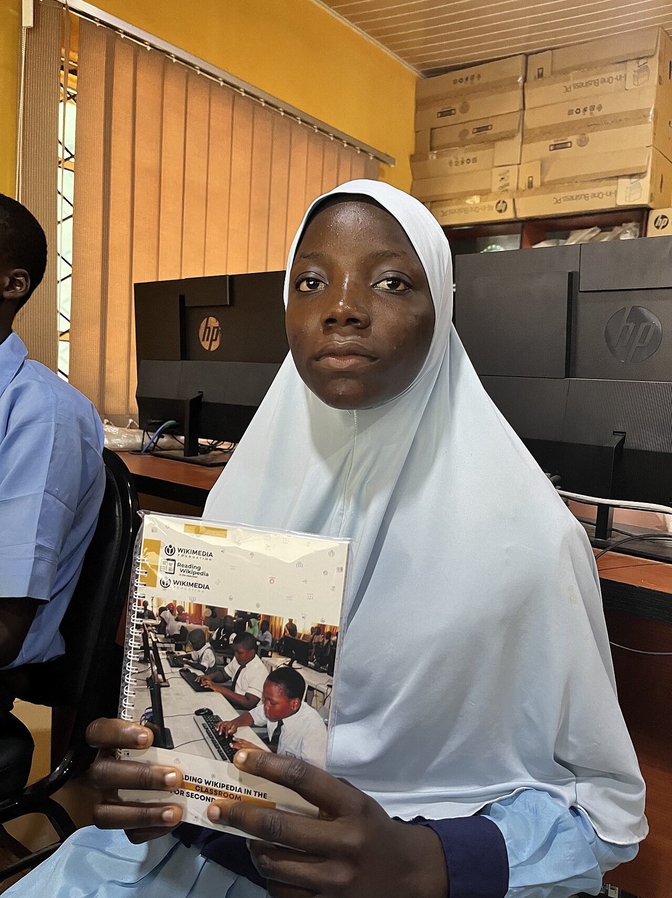
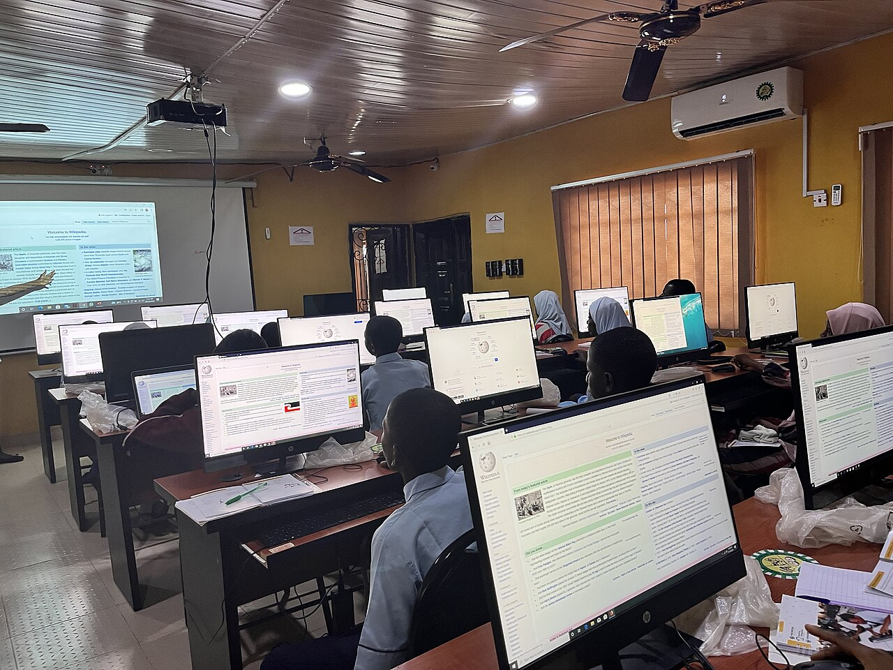

Junior secondary
Build strong foundations, develop good learning habits, and stay curious.

Mercy T International College
A place to learn with purpose, grow in confidence, and prepare for what comes next.
Illustrative Nigerian school photography — not Mercy T students.
A school for the next step
Mercy T International College supports students through junior and senior secondary education. Learning is a journey shaped by curiosity, commitment, and the confidence to keep moving forward.
Explore the learning pathways
Learning pathways
Build strong foundations, develop good learning habits, and stay curious.
Deepen understanding and prepare for the opportunities ahead.
For current admission requirements and available classes, contact the school through its existing admissions process.
Admissions
New applicants can begin with the existing registration process. Already have an account? Sign in to continue to the school portal.